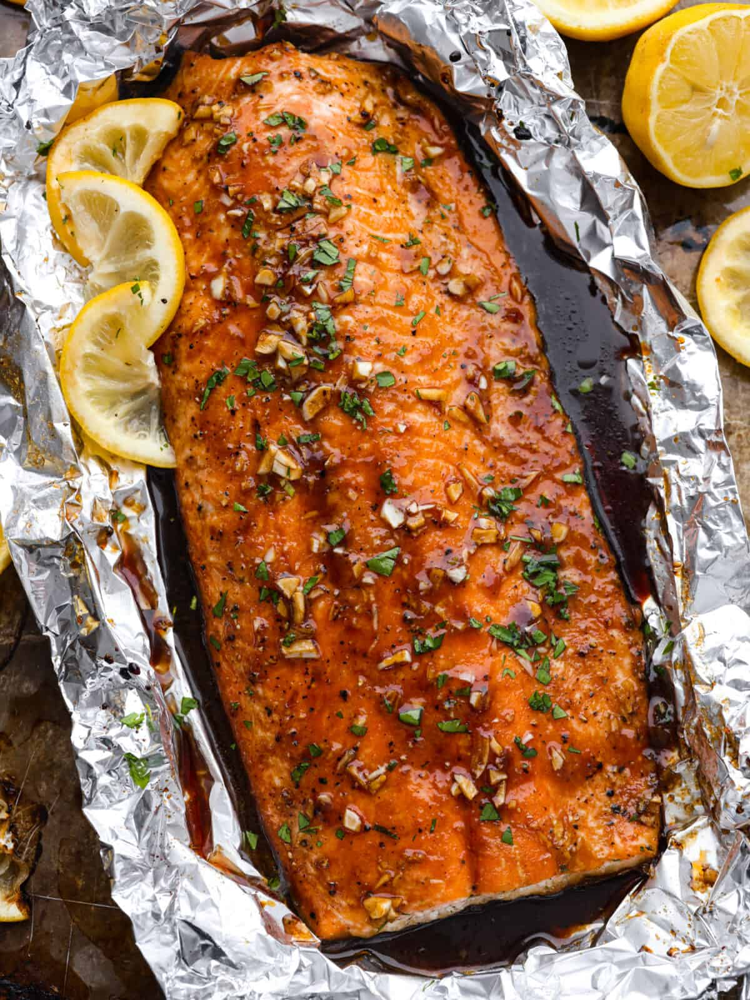

Home
Garlic Brown Sugar Glazed Salmon

Description
Salmon fillets glazed with brown sugar, garlic and baked in foil.
Ingredients
- 2 lbs of salmon
- 2 tablespoons of olive oil
- 1/4 cup of brown sugar
- 1/4 cup of soy sauce
- 3 garlic cloves, minced
- Juice from 1 lemon
- 1 teaspoon of salt
- 1/2 teaspoon of pepper
- Lemons and chopped parsley for garnish
Steps
- Preheat oven to 350 degrees Fahrenheit. Line a baking sheet with aluminum foil. Lay the salmon on top and sprinkle with salt and pepper. Fold up the sides of the aluminum foil around the salmon.
- In a small bowl, whisk together the olive oil, brown sugar, soy sauce, garlic, lemon juice, salt, and pepper. Pour the glaze over the salmon. Top the salmon with aluminum foil and seal.
- Bake for 20-25 minutes or until salmon is cooked throughout. Take the foil off of the top and baste the salmon with the sauce in the foil. Broil for 3-5 minutes or until brown and caramelized. Garnish with lemon slices and chopped parsley if desired.
Original recipe here